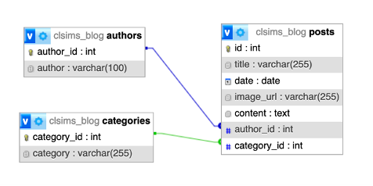
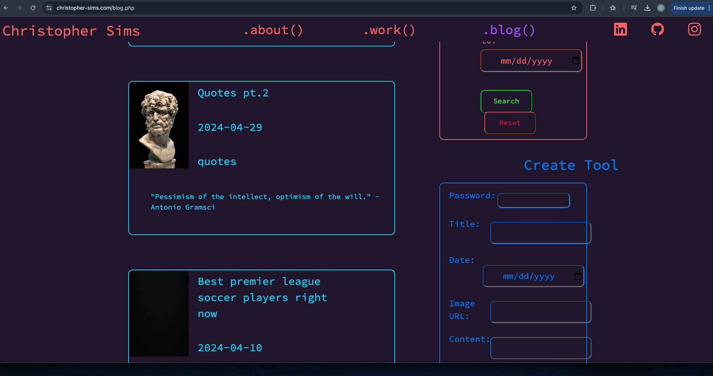

PROJECTS
Traffic Sign Classifier
I created a multi-class convolutional neural network classification algorithm to identify traffic signs trained using the Kaggle - "German Traffic Sign Recognition Benchmark" database. For this project, my tech stack was pandas, numpy, and tensorflow & keras. Then, I loaded and preprocessed the images, resizing to 32x32 and normalizing the pixel values. Then, I created the neural network: I first opted to flatten my input to a 1D array to feed into two hidden layers with ReLU activation function for non-linearity. Output layer function was softmax, apt for multi-class classification problems. For my loss function I used sparse categorical cross entropy and the standard gradient descent optimizer. I ran the first training session for 30 epochs. My validation accuracy was about 96%, so I decided to move to testing the accuracy on the test set and came back with ~87% accuracy score.
Premier League Sports Betting Algorithm
Developed a neural network analyzing a dataset of 2000 games, helping me gamble on Premier League sports that increased my betting accuracy by ~8%. Technologies used: Python, Keras & Tensorflow, Scikit-learn, numPy, Pandas. I found a dataset of every Premier League since 1994, two years after the league was founded. The initial difficulty lay in analyzing what data mattered and what didn't and choosing my architecture. I decided my neural network will be a softmax multi-class classification problem, with three output neurons: probability of home team winning, drawing, and losing. Additionally, I needed a way to compare how good two teams were compared to each other. Therefore, I engineered two new features, home_team_ELO and away_team_ELO from http://clubelo.com/ENG.
Autonomous Driving Transformer
I setup, trained, and evaluated the "InterFuser: Safety-Enhanced Autonomous Driving Using Interpretable Sensor Fusion Transformer" paper by CoRL 2022 on CARLA 0.9.11 benchmark scenarios, scoring high on the CARLA leaderboard. This required me to fully understand their unique "interpretable" transformer architecture, gain familiarity with CoRL's codebase, and successfully run the transformer on CARLA servers. CARLA is an open source project used to support the development, training, and validation of autonomous driving systems.
Personal Blog CRUD from Scratch
I added three different tools so I could manage my posts directly on my website: a search tool, a create tool, and a delete tool. Here are some techniques I’ve used to accomplish this using PHP and SQL: Dynamic Query Filters: based on user inputs, I dynamically append conditions to the SQL query allowing for customizable search. Input handling and validation: checking for presence and non-emptiness of parameters before appending to SQL query. Pagination: calculating total results, results per page, and other pagination logic to ensure users can navigate through pages of results Password Hashing: for creating and deleting posts, I use a hashed password check for security and to authenticate actions.
Gradient descent :)

InterFuser simulation

Database

Blog Design
